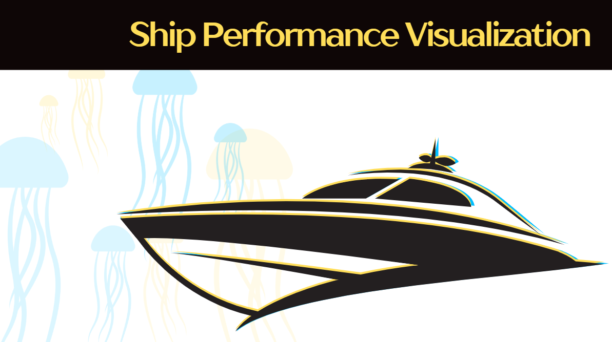

Take-home Exercise 1

1. Overview
- Background
- An international media company plans to publish an article on ship performance.
- Your role as the Graphical Editor is to design insightful visualizations, going beyond default styles.
- An international media company plans to publish an article on ship performance.
- Dataset Description
- Overview of the Ship Performance Clustering Dataset.
- Explain the data sources, key variables, and data types (e.g., speed, fuel consumption, ship type).
- Overview of the Ship Performance Clustering Dataset.
- Task Description
- Use R (tidyverse + ggplot2) for data cleaning and visualization.
- Goal: Create 5-10 visualizations and write 150-word analyses for each.
- Use R (tidyverse + ggplot2) for data cleaning and visualization.
2. Data Cleaning & Preparation
- Data Understanding
- Identify key variables (e.g., ship speed, fuel consumption, voyage distance).
- Perform an initial data inspection using
glimpse()andsummary().
- Identify key variables (e.g., ship speed, fuel consumption, voyage distance).
- Data Inspection
- Check for missing values, data types, outliers, and duplicates.
- Check for missing values, data types, outliers, and duplicates.
- Handling Missing Values
- Decide on strategies like imputation, deletion, or interpolation.
- Decide on strategies like imputation, deletion, or interpolation.
- Handling Outliers
- Use boxplots, Z-scores, and IQR methods to detect outliers.
- Use boxplots, Z-scores, and IQR methods to detect outliers.
- Duplicates & Standardization
- Address duplicates and standardize units (e.g., speed, fuel consumption).
- Address duplicates and standardize units (e.g., speed, fuel consumption).
- Encoding Categorical Data
- Handle categorical variables (e.g., ship type) using one-hot encoding or factors.
- Handle categorical variables (e.g., ship type) using one-hot encoding or factors.
- Merging & Splitting Data
- Combine additional data sources (e.g., weather, port information) if needed.
- Combine additional data sources (e.g., weather, port information) if needed.
- Saving Clean Data
- Save the cleaned dataset for analysis.
3. Visualization Strategy
Key Questions:
- How does ship performance change? (over time, with weather, or region)
- How efficient are different types of ships in terms of fuel consumption?
- What is the relationship between speed and fuel consumption? (is there a pattern?)
- Can we identify specific groups of ships? (clustering analysis)
Potential Visualization Methods:
- Trend Analysis → Line charts (time series plots)
- Distribution Visualization → Histograms, density plots
- Category Comparison → Boxplots, violin plots
- Relationship Analysis → Scatter plots with regression lines
- Clustering Analysis → PCA for dimensionality reduction + scatter plots, radar charts for ship clusters
4. Exploratory Data Analysis (EDA)
- Univariate Analysis
- Distribution of ship speed and fuel consumption.
- Distribution of ship speed and fuel consumption.
- Bivariate/Multivariate Analysis
- Ship speed vs. fuel consumption (scatter plot + correlation coefficient).
- Performance differences by ship type (boxplot, violin plot).
- Weather vs. fuel consumption (any correlations?).
- Ship speed vs. fuel consumption (scatter plot + correlation coefficient).
5. Creating Data Visualizations Beyond Default
Core Principles:
- Go Beyond Defaults → Use ggplot2 extensions (e.g., gghighlight, patchwork, ggthemes).
- Enhance Readability → Use appropriate colors, labels, annotations.
- Emphasize Insights → Use animations (gganimate) and interactive charts (plotly).
Example Visualizations:
1. Ship Speed vs. Fuel Consumption (scatter plot + smooth regression line).
2. Fuel Efficiency by Ship Type (violin plot).
3. Clustering Ship Performance by Region (PCA + radar chart).
4. Voyage Time vs. Fuel Consumption (time series plot).
5. Anomalous Ship Performance (boxplot + gghighlight for outliers).
Each visualization should be accompanied by a 150-word analysis, explaining patterns, trends, and potential insights.
6. Conclusion
- Summarize key findings.
- Highlight significant patterns and trends.
- Provide potential explanations and business implications.
- Limitations & Future Improvements (e.g., data limitations, model optimization).
7. References
- Data sources.
- Related literature and best practices in data visualization.